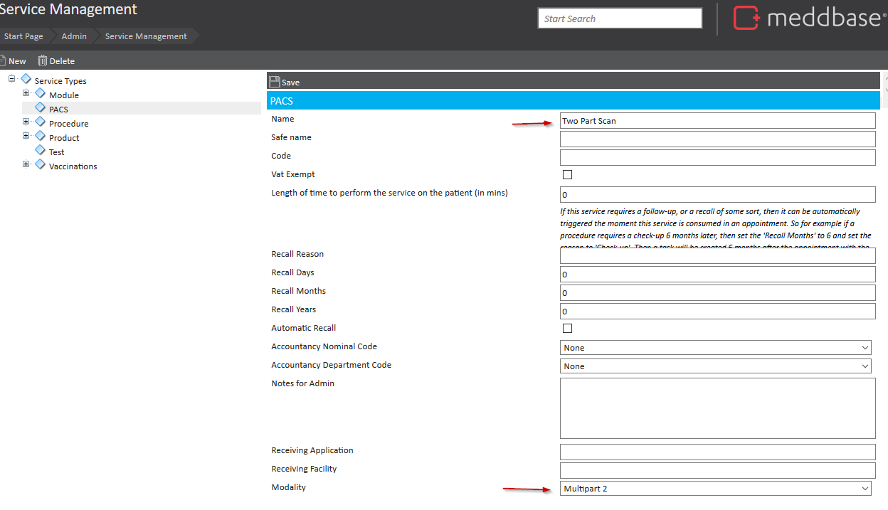

Whilst PACS services share much in common with other service types within Meddbase there are some fundamental differences, for example, adding two services to Meddbase will create two orders and thus two separate studies to be reported on. This is not always appropriate and sometimes multiple studies need to be grouped and reported on simultaneously.
This article explains how to create Multipart PACS services.
To achieve this, Meddbase features a ‘Multipart’ service. On creation of a new PACS service you may select the modality to be ‘Multipart 1 - 6’. When applied to an appointment, this service will group the following services into one order request.
For example, create a new PACS service by going to Start Page > Admin > Service Management and click ‘New’ > ‘PACS’. We will call our new service ‘Two Part Scan’ and select ‘Multipart 2’ as the modality. Once saved we can apply this service to our appointments.

An example of how this applies to the booking process is included in ‘Booking Imaging Appointments’.